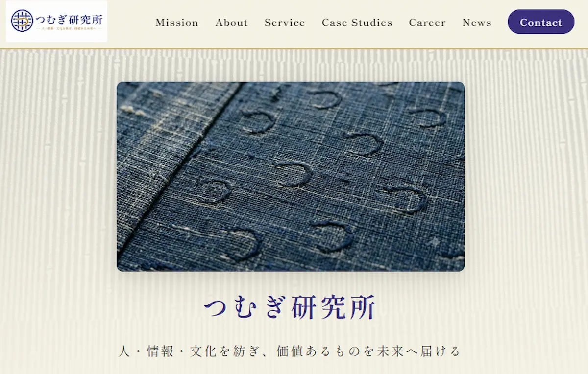

デザイン
自分が所有する着物や帯を背景素材として活用し、 つむぎ研究所らしい世界観を表現しました。
Graduation Showcase
人・情報・文化を紡ぎ、
価値ある未来へ届ける
WIT Webクリエイター科
▼ Scroll
なぜ、つむぎ研究所のサイトを制作したのか

多様な価値をつなぎ、 新しい価値を生み出すことで、 社会・地域・人の未来へ 貢献することを目指します。
中間課題・個人制作・卒業制作まで、 一貫して同じ思いで取り組みました。 卒業後も育て続け、 価値を積み上げていくサイトを目指します。
自分が所有する着物や帯を背景素材として活用し、 つむぎ研究所らしい世界観を表現しました。
HTML / CSS を中心に制作。 JavaScriptは必要最小限とし、 シンプルで保守しやすい構成を目指しました。
ChatGPT・Gemini・Claudeを活用し、 企画・文章・改善・デザイン検討まで 制作全体を支援してもらいました。
先生からのアドバイスを受け、 NEWSのHover表示をAccordionへ改善。 利用者目線を意識してブラッシュアップしました。
GitHub Pagesで公開。 公開後も改善・更新を続けられる運用を意識しました。
「何を作るか」より 「なぜ作るか」が大切。
デザインも文章も、 相手に伝わって初めて価値になる。
意見を受け入れ、 改善を繰り返すことで、 より良いサイトへ成長した。
GitHub Pagesで公開し、 継続して更新できる環境を整えた。
Webサイトは、 公開してからがスタート。
Webサイトは、公開してからが始まり。